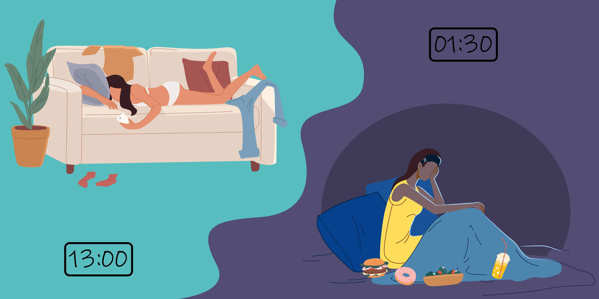
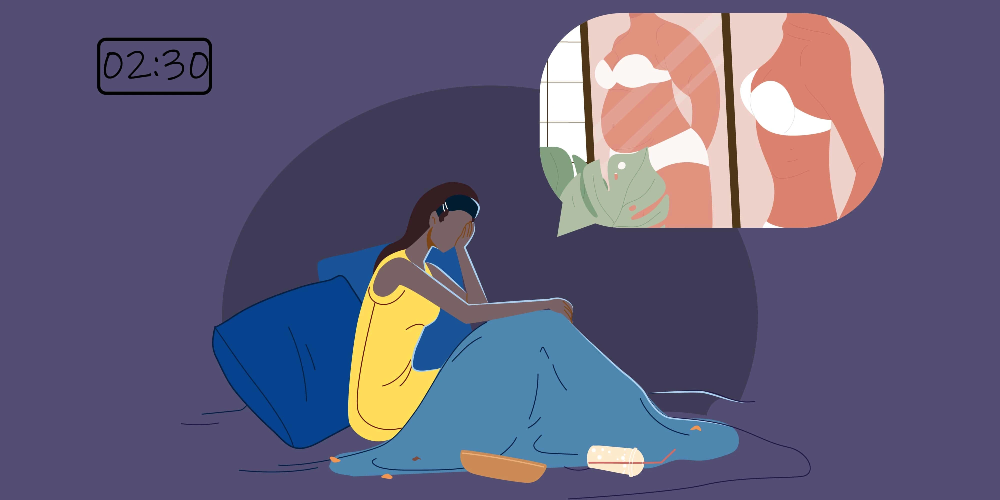

What is Binge Eating Disorder
A binge is an episode of eating larger amounts of food than most people would normally eat during a short period of time. During this episode, the person feels a lack of control. If binge eating episodes occur at least once a week and they are not followed by behaviour to prevent weight gain for an extended period of time they might meet the criteria for Binge Eating Disorder.

What is a binge?
That is to say, a binge is an episode of eating more rapidly than normal until feeling uncomfortably full. Oftentimes people binge when they aren’t hungry and they eat alone due to embarrassment. However, after a binge, people describe feels disgusted, guilty or shameful.
Why do people binge?
Certainly, it is usually about emotions and not about hunger. There are different psychological
frameworks to understand binge eating. Binge eating could be understood from a strict period of
control (diet or starvation) followed by a release.
Sometimes a binge is a means of distraction or a way to numb emotions. For example, people may
binge when they are bored, lonely or fearful.
How many Australians have Binge Eating disorders?
According to Inside Out, an Australian research institute about 1 million Australians are living with Binge Eating disorders. Certainly, this would make it the most common eating disorder. More common than Anorexia or Bulimia Nervosa.

Bodyweight and Binge Eating Disorder – Not Related
Binge Eating Disorder and body weight are not related. Body weight is not part of the diagnostic
criteria for Binge Eating Disorder. Body weight should not be a factor in determining what type
or the amount of treatment is offered for Binge Eating disorders.
But health professionals often make the mistake of not assertively treating Binge Eating disorders
when a client has a normal BMI or is underweight. Psychological and physical distress often does
not relate to body weight.
Cause of Binge Eating Disorder?
Binge eating is complex, usually with different parts contributing. Researchers have seen the following risk factors:
- A negative or critical view of oneself
- Childhood abuse
- Parental Depression
- Negative views from family members around weight, shape or eating
- Focus on body image due to occupational or other interests
- A family history of disordered eating
Risk factors don’t mean causation. However, they can be helpful to understand the drivers of binge eating.
Signs of Binge Eating Disorder
Behavioural
- Buying excessive amounts or hoarding food.
- Eating alone or when not hungry
- Eating quickly
- Not stopping till uncomfortably full
Psychological
- Excessive thinking about food
- Feeling out of control when eating
- Low self-esteem plus feelings of shame and guilt after binge eating
- Sensitivity to comments around weight and body shape
Physical
- Changes in weight
- Poor sleep and as a result feeling tired
- Bloating
Differentials
How are Binge Eating Disorder and overeating different?
Overeating is eating beyond the point of being comfortably full. We overeat when food is plentiful,
pleasurable, when we are distracted or to comfort us when feeling sad or overwhelmed.
On the other hand, Binge eating disorder is more frequent binges that occur at least weekly in
order to meet the diagnosis and the desire to eat is intense. Binge eating unlike overeating is
highly distressing and associated with guilt and a sense of loss of control.
How are Binge Eating Disorder and Bulimia Nervosa different?
People with this engage in compensatory or purging behaviours after a binge. They may self induce
vomiting, go long periods without eating or over-exercise. People with Bulimia Nervosa want to
correct for a binge and turn to these compensatory behaviours.
Binge Eating Disorder is different as there are no compensatory behaviours or purging after a binge.
However, in both Binge Eating Disorder and Bulimia Nervosa, there are feelings of deep shame and
guilt following a binge.
Why seeing a GP initially is important
The Australian health care framework is developed around the GP being the hub or coordinator of care. So, a GP can refer you to a psychologist, dietitian or psychiatrist. Your doctor can also oversee your physical health care.
Tips when seeing a GP for the first time:
- Book a double or longer consultation
- Take a support person with you
- Write down questions and concerns beforehand on a piece of paper
- A GP is not a specialist in treating eating disorders. Ask for a referral from your GP to a psychologist, dietitian or psychiatrist with experience treating eating disorders >
However, remember, your weight is rarely a determining factor of whether you should get help. Rather it is the degree of physical and psychological distress plus how much it is impacting the quality of your life.
What happens during a Binge Eating Disorder assessment?
- Your clinician will ask questions to clarify your eating style or pattern, thoughts about body image, self-esteem and further exploration of psychological symptoms.
- Family views around food, current struggles and an attempt to understand the person within the context of their eating and lives overall.
- Sometimes questionnaires are used and family members or other support people are interviewed
- Physical examination for any signs of an eating disorder. This is done by a doctor, and you can request someone else to be there with you.
- Blood tests are sometimes asked for, looking for any physical complications from disordered eating
Treatments for Binge Eating Disorder
Therapy
Certainly, the treatment for eating disorders is mainly talking therapies. They work by helping you to deal positively with thoughts and feelings that drive binge eating. In therapy, you will learn to challenge the over-evaluation of body image and unrealistic weight goals. Behavioural aspects of therapy will provide practical strategies to prevent binge episode, in turn, return to a more in control eating pattern.
Medication
Often considered a second-line treatment for Binge Eating Disorder, there is an evidence base
for the use of selective serotonin reuptake inhibitors (SSRI). The role of medication increases
if there is also notable anxiety and or depressive symptoms.
Reaching out for help when experiencing Binge Eating Disorder can anxiety-provoking. There can
be shame and self-blame which you can feel. However, our team are well aware of this. Send us an
email, web chat inquiry or call us to learn how our psychologists and psychiatrist can help.